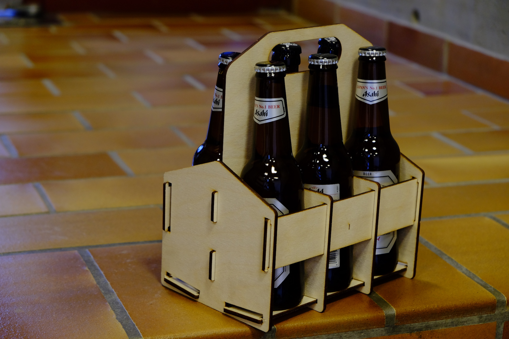
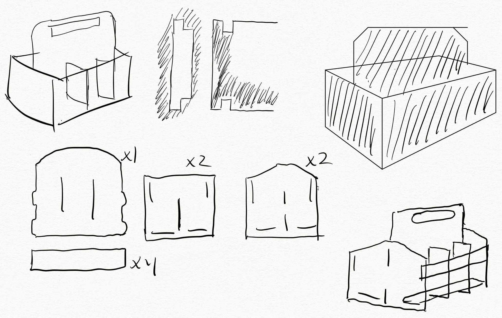
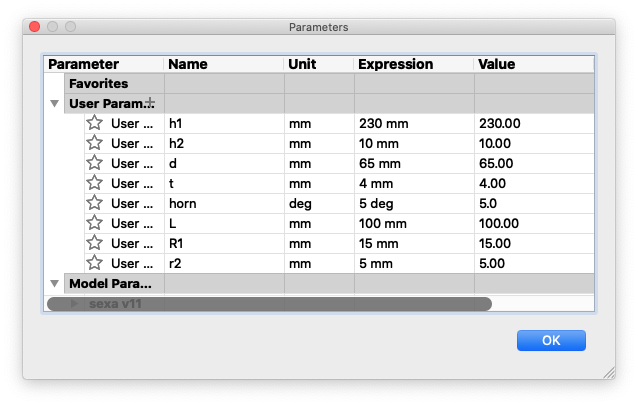
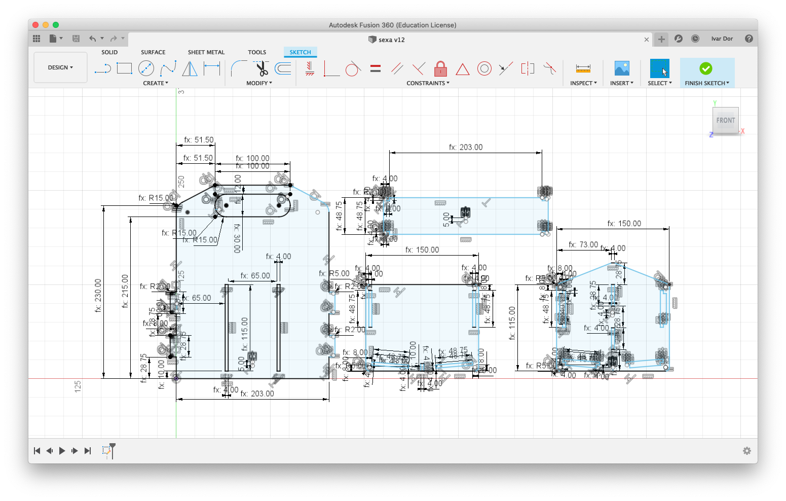

Verkefni 2: Geislaskurður með þrýstimátun
Verkefni 2 í áfanganum Framleiðsluferli snýst um að hanna og búa til frumgerð af geislaskornu samsetningarsetti úr við sem smellt er saman án líms. Einnig er gerð krafa um að hönnunin sé breytuháð svo auðvellt sé að aðlaga hana eftir aðstæðum hverju sinni.
Hugmyndin: Sexan
Hæfilega flókið, mjög nytsamlegt og uppfyllir öll skylirði verkefnisins. Sexan er fjölnota flöskuhaldari sem leysir álíka mörg vandamál og hann býr til. Glerflöskur eru ekki sérlega þægilegar í flutningum nema jú í eintölu og í annari hendi. Nú ætla ég ekki að kafa of djúpt í fræðina en það má þó segja að einhver ávinningur hljótist af því að ferðast með sex flöskur í stað einnar. Því hef ég valið að færa fólkinu þessa uppskrift af handhægum-fjölnota-flöskubera sem rúmar einar sex flöskur og má sérsníða eftir hvers þörfum.
Undirbúningur fyrir hönnun
Fyrst leitaði ég innblásturs frá vefnum og fann þar ýmsar lausnir á akkúrat þessu vandamáli. Þær voru margar snyrtilegar og útpældar en skorti flestar lím-lausu útfærsluna. Þannig ég tók fram pödduna (e.iPad) og pennan og hóf að rissa upp hugmyndir:

Ég ætlaði samt helst ekki að finna upp hjólið þannig ég fletti líka upp orðasamböndunum „laser cut press-fit“ og „laser cut glue-less“ til að sjá hverju landinn hefði reynslu af. Allt voru þetta prýðilegar lausnir sem byggðust flestar á aðferðinni þar sem samfallandi fingur eru skornir svo þeir smelli þétt saman. Þessi aðferð hefur ýmsa kosti, er þaulreynd og mjög fjölhæf.
Til þess að geta notað þessa fingra-aðferð þarf að þekkja svokallað kerf-gildi geislaskerans sem nota á hverju sinni. Það er oftast auðvellt að finna og einfallt að gera ráð fyrir því í hönnun með breytum. Ég ákvað samt að leiða hugan aðeins lengra og sjá hvort ég gæti ekki komist hjá þessum fínstillingum. Þetta gerði ég bæði til að auðvelda mér lífið og sömuleiðis auðvelda öðrum að leika þetta eftir. Er þetta brot forsendum? Kannski, látum það ekki hindra okkur að þessu sinni.
Lausnin féll af himnum ofan! Viðurinn er sveigjanlegur og þolir talsverða fjaðurbjögun. Er ekki hægt að nýta þessa spennu eins og með fingurna en bara ekki eins og með fingurna? Ég veit ekki hvað þessi aðferð heitir en hún er líklegast ekki ný af nálinni. Ég kalla hana bara SMA, sem er stytting á saman-með-afli, því eins og kom síðar í ljós krefst hún eylítils afls í praxís.
Vindum okkur í þetta!
Hönnun
Hvað sem samnemendum mínum þótti um handteikninguna í kúrsinum Tölvuteikning og framsetning sem við sátum á öðru misseri þá sannast það hérmeð að hún kemur að góðum notum. Þetta vinnur engin verðlaun en hérna er allavegana uppkastið sem ég útfærði síðan á tölvutæku formi.

Tölvuteikning með Fusion 360
Ekki að ég hati Fusion, en ég fæ alltaf smá innilokunarkennd þegar ég opna þetta ofur-einfaldaða viðmót. Það er gott að því leitinu til að það býður þér aldrei upp á að flækja hlutina of mikið sem er akkúrat markmið þessa verkefnis. Ég byrjaði á því að opna og vista nýja hönnun og skilgreina síðan eftirfarandi breytur með því að opna Modify fellilistann og velja þar Change Parameters. Þá opnaðist þessi gluggi þar sem ég ýtti á + til að bæta við breytum.
Þessi uppskrift yrði og löng ef ég ætlaði að kenna grunnskref Fusion 360 líka. Ég vil benda áhugasömum á YouTube fyrri frekari útskýringar en skauta yfir þann hluta núna. Ég breytti upphaflegu hönnuninni ekki mikið fyrir utan að ég rúnaði flest hornin. Eins og myndin sýnir er þetta fullkomlega skipulögð óreiða. Allt er háð þessum 8 breytum.
Undirbúningur fyrir geislaskurð
Einhverjum hefði dottið í hug að púsla þessu saman í tölvunni áður en lengra væri haldið til að vera viss um að þetta færi allt saman. Það er stórfín hugmynd en ég sá fyrir mér að skynsamlegra væri að byrja strax að skera frumgerð úr bylgjupappa til að kanna samsetninguna. Þá gæti ég mögulega brennt mig á mistökum í uppsetningu skerans áður en ég færi að skera úr dýrara efni. Og viti menn, ég fann villu í teikningunni sem var þá auðvellt að laga og enginn dýr krossviður fór til spillis.
Aftur að Fusion360, nú var ég kominn með teikningu og búa til skrá sem geislaskerinn getur lesið. Það er t.d. hægt að gera með forritinu Inkscape en fyrst þarf að koma teikningunni út úr Fusion360. Það er gert með því að hægrismella á teikningunna og velja Save as DXF.
Næstu skref eru örlítið mismunandi eftir því hvernig geislaskeri er notaður. Undirbúningur og notkun geislaskerana uppi í FabLab er vel útskýrð á þar til gerðum leiðbeiningum sem eru útprentaðar uppi í FabLab. Að því sögðu er ferlið í grófum dráttum eftirfarandi:
- DXF skráin færð inn í vigurteikniforrit á við Inkscape.
- Teikningunni breytt í vigurskrá og línuþykktir/litir stilltir fyrir skurðinn.
- Skráin vistuð á viðeigandi formi, t.d. Pdf. og færð yfir á skerann.
- Geislaskerinn undirbúinn fyrir skurð: kveikt á skeranum og tilheyrandi búnaði, núllstilling, hæðarstilling og efninu komið fyrir.
- Skerinn settur af stað og hluturinn síðan settur saman að skurði loknum.